Scopri una rete di buone idee

Comunicazione strategica
Scopri di più »
Ricerche per il fundraising
Scopri di più »
Strategie di raccolta fondi
Scopri di più »
Aziende per bene
Scopri di più »
Internazionalizzazione
Scopri di più »
First Friday
Scopri di più »
Perchè scegliere IFC Italy?
Scopri di più »
Web design:
Davide Rossi
Illustrations:
Sara Bianchi